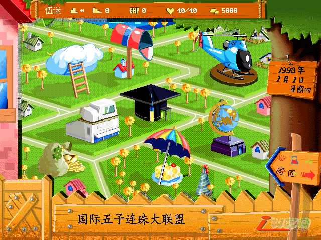

伍迷-超级五子棋（XP版）
#1 伍迷-超级五子棋（XP版） 作者：有志青年 发表时间：2009-2-18 8:55:20
本游戏以人物养成方式进行，你将扮演一名“伍迷”的少年，在台北、东京、北京等地打工赚钱；搜集宝物；拜师学棋，与各种个性独特的人、美少女、光头力士及蒙面怪客等，切磋较量棋力。只要实力够，击败世界五子棋名人，就能成为举世无敌超级五子棋王。(此版本为6dd.5d6d.com制作的超级五子棋XP复刻版解决了原来XP系统上不能运行的问题）
操作说明：
Ctrl+F9 退出游戏
Alt+Enter 全屏/窗口
游戏内鼠标操作（左键确认，右键取消。游戏可以存档）
如果我进入不了游戏该怎么办？
关闭这个，然后找到游戏安装的目录，找到dosbox.exe运行就可以了

纳米盘下载页： http://www.namipan.com/downfile/5zi%20setup.exe/26abb7bbe5fdf102f7467267a61992b90296100839ea8200
本站下载点击下载
#2 Re:伍迷-超级五子棋（XP版） 作者：江南新绿 发表时间：2009-2-18 10:41:00
这个东东，玩过。面对可以经常下的高手，多输几盘一样涨分的。#3 Re:伍迷-超级五子棋（XP版） 作者：江南新绿 发表时间：2009-2-19 12:25:25
简单攻略：游戏难度不高，适合初学者
出生地在台北，挑战小饭馆的老板，输给小老板十几盘，Exp（经验值）涨到1000，鉴定等级为10级，再打几天工，混够800块钱参加台北的1月25日比赛，提前三天报名，如果还债的意义好像不大,1月25日的比赛有50000元的收益，之后在台湾俱乐部里面多下几次，要给钱哦，输了也涨经验值。然后去鉴定成7级，之后乘飞机去北京。
北京俱乐部张先生不在，付费对局，遇到一个第一名的选手，赢了送水晶棋子。
周二公园里面对局，推拿免费券，还有internet免费券，不过遇到蒙面人要输掉，否则就进公安局拘留几天了。有了比赛消息就方便多了。
6月15日的比赛，北京购物店的比赛赢了之后再去，会遇到张**，挑战n次失败。鉴定级别的时候告诉没有名额了。去台北打败五子天堂刘无敌和朱天下。 告诉东京有个老头很厉害。回到北京，鉴定级别到最高就可以去东京了。挑战啤酒店n次也挑战不过，哈哈，为了涨经验没办法。老和尚也要多输几次，后面就靠送礼1500元的金棋盘可以涨不到1000的exp经验。
碧玉棋盘200000元慢慢挣哦 ，级别上去了。可以去东京教棋，5000一天，钱少的时候，买几个大力丸补一下，钱多了，去北京买个手镯30000元一个，每天补6点体力，这样可以边打工边教棋。
买完碧玉棋盘，就去北京桑拿店，凭券免费消费一次，之后挑战完之后，去东京挑战奈良，古谱到手，告诉老和尚一下。
最后北京神秘屋10盘棋。
另一个分支是成为第一高手。
［ 有志青年 于 2009-2-19 12:30:46 时奖励此帖[金币加 20 威望加1］
#4 Re:伍迷-超级五子棋（XP版） 作者：极地剑客 发表时间：2009-3-8 23:34:09
这个几年前玩过~那个时候从杰出下的~因为以前喜欢下棋~所以收集一些和棋相关的东东~没有就自己搞~
#5 Re:伍迷-超级五子棋（XP版） 作者：五子乾坤 发表时间：2009-3-13 21:36:41
成为第一高手玩通关了。可是死活也找不到古谱，“去东京挑战奈良，古谱到手”，奈良是谁？东京除了老和尚、卖酒的和商店的，没人愿意接受我的挑战啊。#6 Re:Re:伍迷-超级五子棋（XP版） 作者：江南新绿 发表时间：2009-3-13 22:08:51
引用：右上角的那个，但不是浴室也不是啤酒吧。是喝茶的。小孙女的爷爷就是奈良。在见奈良之前必须打败北京推拿店的那个，他会提示你的。
原文由 五子乾坤 发表于 2009-3-13 21:36:41 :
成为第一高手玩通关了。可是死活也找不到古谱，“去东京挑战奈良，古谱到手”，奈良是谁？东京除了老和尚、卖酒的和商店的，没人愿意接受我的挑战啊。
#7 Re:Re:Re:伍迷-超级五子棋（XP版） 作者：五子乾坤 发表时间：2009-3-14 14:54:32
引用：
原文由 江南新绿 发表于 2009-3-13 22:08:51 :
右上角的那个，但不是浴室也不是啤酒吧。是喝茶的。小孙女的爷爷就是奈良。在见奈良之前必须打败北京推拿店的那个，他会提示你的。
谢谢指点，原因是打败推拿的以后还要再进一次推拿店听他说，然后才能去东京挑战茶室，战胜10个蒙面人过关了，呵呵。
［ 有志青年 于 2009-3-14 15:04:26 时奖励此帖[金币加 20 威望加1］
#8 Re:Re:Re:Re:伍迷-超级五子棋（XP版） 作者：网客阿非 发表时间：2009-4-23 22:22:04
引用：
原文由 五子乾坤 发表于 2009-3-14 14:54:32 :引用：
原文由 江南新绿 发表于 2009-3-13 22:08:51 :
右上角的那个，但不是浴室也不是啤酒吧。是喝茶的。小孙女的爷爷就是奈良。在见奈良之前必须打败北京推拿店的那个，他会提示你的。谢谢指点，原因是打败推拿的以后还要再进一次推拿店听他说，然后才能去东京挑战茶室，战胜10个蒙面人过关了，呵呵。
［ 有志青年 于 2009-3-14 15:04:26 时奖励此帖[金币加 20 威望加1］
推拿的说他店里没有人会五子棋,
遇到这个问题怎么解决?北京的推拿店
#9 Re:伍迷-超级五子棋（XP版） 作者：淡红的秋樱 发表时间：2009-4-24 21:27:22
推拿店的那个人最早出现在北京的公园，输了一张去推拿店的门票，，我用这个门票洗了一次就认识了。不洗不行的。
#10 Re:Re:伍迷-超级五子棋（XP版） 作者：郑剑髯 发表时间：2009-8-25 20:10:07
怎么送礼?那个棋盘怎么送给老和尚?
#11 Re:Re:Re:伍迷-超级五子棋（XP版） 作者：郑剑髯 发表时间：2009-8-25 20:11:58
急~那个棋盘怎么送给老和尚?
看到发答案给我邮箱也行~
hangzhuozyh@163.com
#12 Re:伍迷-超级五子棋（XP版） 作者：飞龙掌血 发表时间：2011-3-22 13:38:40
运行老是出错，为何？ >
>
#13 Re:伍迷-超级五子棋（XP版） 作者：飞龙掌血 发表时间：2011-3-23 15:21:27
没有人遇到过这个情况吗？